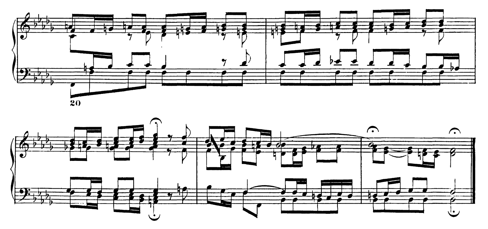
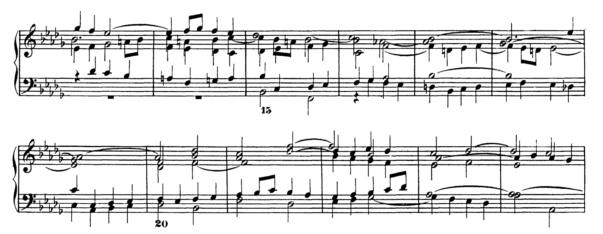
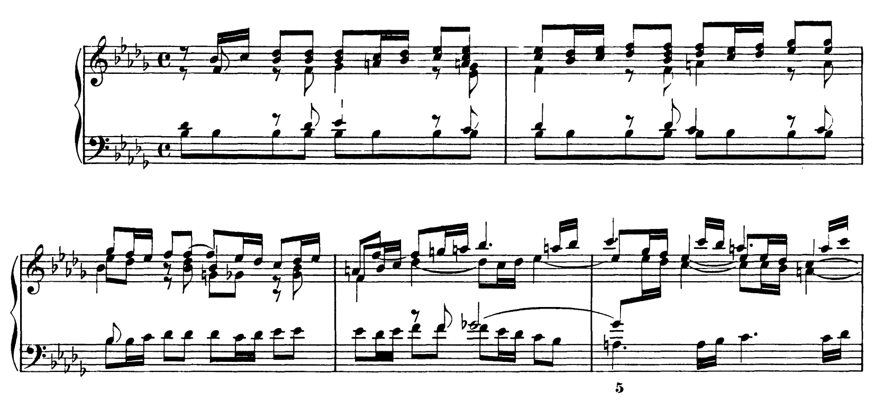

Click to hear Bach’s Prelude and Fugue in B-flat minor, no. 22, BWV 867 from The Well-Tempered Clavier, played by Chris Breemer. Sourced from the IMSLP.
Note: The following is a mix of fact and opinion. I trust the discerning reader to tell the difference between the two.
Johann Sebastian Bach is considered by many to be the greatest composer of Western classical music[i], including me (or at least I would say the debate is between him and Beethoven). And if we wish to maintain a façade of objectivity, there is a preponderance of evidence to support the fact. Bach has a massive corpus of work, spanning nearly 1100 surviving pieces and 175 hours[ii]; he, according to Classic FM, had an IQ of 165 (calculated retrospectively)[iii], and he fathered an unparalleled twenty children, five of whom were also named Johann, and four of whom went on to become famous composers in their own right (whom I collectively refer to as “the lesser Bachs”)[iv].
He is also heralded as a master, really the master, of counterpoint[v]. The title “master of” is applied to several composers in several contexts; Franz Schubert is often called a master melodist[vi]. However, one can more objectively (continuing the façade) be a master of counterpoint than melody, although I will argue that Bach, too, is a master melodist later on. What makes a melody masterful is far less clear than great counterpoint. A master of counterpoint is more akin to a mathematician than a great painter. This is because the rules of counterpoint are as precise as they are unflinching[vii]. For proof, I suggest you take a look at this series of excellent tutorials by Jacob Gran. From this, you will see that there is sometimes an objectively right note, or, more likely, an objectively wrong one. That is not to say that there is no creativity needed in counterpoint. On the contrary, as Jacob Gran notes, masterful counterpoint comes by subverting the rules, which Bach does brilliantly. He uses startling dissonances (that one would think belong in Stravinsky) to build tension, then returns to consonance to resolve it in a satisfying way. As an example, here is the end of Prelude No. 22 in B-flat minor, BWV 867[viii]:

We’ve discussed Bach’s mastery of counterpoint, but most would agree that counterpoint is a necessary but insufficient part of being a composer. What about his music overall? To me, one attribute defines it above all else, whether listening or playing: the sense of many parts converging into something greater than their sum. His pieces build toward a culmination in which the motifs, melodies, and harmonies from earlier return, and one gets the sense of a grand design finally revealed, wherein every puzzle piece is placed correctly. This is felt most profoundly with pieces like Passacaglia in C minor, BWV 582, or Prelude and Fugue in E-flat major “St. Anne’s”, BWV 552. Bach has the reputation of being overly technical, a bit stuffy, but while it is true that knowledge of music theory and the structure of his pieces will enhance the listening experience[ix], his music also tends to be inherently pleasing; you can simply let it wash over you.
I have a confession to make. What prompted me to write this was not a sudden inspirational love of Bach, rather, it was frustration. I was trying to learn Fugue No. 22 in B-flat minor, BWV 867 (one of the easiest fugues from The Well-Tempered Clavier). It, like all his pieces, starts off innocently, almost as a taunt. A simple melody in the right hand, which is then repeated in the left hand. Glancing across the page, there is nothing that immediately jumps out as extremely difficult, but be warned: there will be a singular bar a couple of lines in that can only be called a special brand of torture, violating the Eighth Amendment. Playing it requires a superhuman amount of dexterity, since Bach insists that some note be held for its exact duration so the voicing is preserved. But rest assured, that bar can be played. No, no, no! This is not some lesser composer who occasionally writes a chord that can only be played with hands the size of Rachmaninoff’s (**cough cough** Alkan, Scriabin, etc…).
Here is the passage that can be blamed for the above outburst:

Not so bad, right? Look again, dear reader! Measures 15–18 are that special brand of torture I was referring to. And it certainly doesn’t help that the editor has given no fingerings. In measure 18, because the B-flat must be held for three beats, and Bach demands that the G-flat be held for four, you must contort your hand, and then you must reach to hit the E-flat, which I was just barely able to do.
Ah, I must have bored you by now with my venting. A brief note on learning Bach more generally: progress at the beginning is intolerably slow. You will wade through the piece, practicing hands independently for what seems like too long. But one day you sit down to practice and find that you are no longer searching for the notes. You are simply playing, with seeming effortlessness. Improvement when practicing the music of other composers is more or less linear (maybe logarithmic), but improvement with Bach is discontinuous! You will suddenly be able to play the piece, and laugh at your former suffering. Just as with listening, the parts will have seemed to come together on their own, and you will be left with a complete creation.
Now I’ve discussed (or rather complained) about playing Bach in some depth, but now I want to explore two aspects of his music that are slightly overlooked: his beautiful melodies and his capacity to provoke emotion. Firstly, you will find a bounty of delightful, sorrowful, and lyrical melodies in his repertoire. Take the opening of the prelude referred to earlier:

It is a haunting, almost aching melody that no doubt should prove to you (assuming, dear reader, you are of average or below stubbornness) Bach’s brilliance as a melodist. Need more evidence? There are a plethora of examples, but here are some of the most famous: Air on the G String, BWV 1068; Prelude in C major from Suite No. 1 for Solo Cello, BWV 1007; Badinerie from Orchestral Suite No. 2 in B minor, BWV 1067; Aria from Goldberg Variations, BWV 988.
Many of the most emotionally potent moments of my life involve music. I am reminded of a specific time during a trip to Iceland. We were driving somewhere in the evening (I’ve forgotten the specifics), surrounded by the stark Icelandic scenery: towering mountains on one side, a barren volcanic wasteland on the other. I was listening to Rachmaninoff’s Second Piano Concerto, allowing myself to be carried by those beautiful melodies, when suddenly, partly because I was in an uncharacteristically sentimental mood, I was overcome by a feeling of gratitude and awe. Gazing upon my surroundings, I was taken aback, shaken.
Yes, a bit saccharine, I know, but is this not the purpose of music? To reveal beauty and to honor God’s creation? Or in my case, as an atheist, to recognize the world’s splendor, its exceptionalism, and to prompt action? The contrarian reader would jump on the fact that I was listening to Rachmaninoff, not Bach. I would reply that had I been listening to the Chaconne from Partita No. 2 in D minor for Solo Violin, BWV 1004, the same effect would have been produced, if not in greater potency. Later in that trip, that same feeling came over when listening to the Prelude from Suite No. 4 for Solo Cello in E-flat major, BWV 1010, a rather unassuming piece which I previously had never listened to thoughtfully. Despite there being no markings on the page to suggest any phrasing or dynamic, a skillful player will find the phrasings and the dynamics and shape them to prompt emotion and reveal beauty. Listen to the Chaconne, or an organ fugue if you’re feeling adventurous, allow yourself to be swept away, and you will understand my effusiveness. Such is the brilliance of Bach.
Endnotes
[i] https://filharmonija.si/en/blog-en/johann-sebastian-bach-and-some-interesting-facts-about-the-german-composer/
[ii] https://en.wikipedia.org/wiki/List_of_compositions_by_Johann_Sebastian_Bach
[iii] https://www.classicfm.com/composers/bach/bach-iq-genius-music/
[iv] https://en.wikipedia.org/wiki/Bach_family
[v] https://web.pdx.edu/~tieph2/gd341/proj1/bach.html
[vi] https://www.kennedy-center.org/artists/s/sa-sn/franz-schubert2/
[vii] https://en.wikipedia.org/wiki/Counterpoint
[viii] Score sourced from the IMSLP.
[ix] https://www.perennialmusicandarts.com/post/music-theory-and-practice-so-what-s-bach-ever-done-for-us